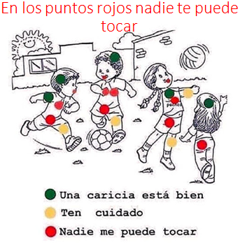
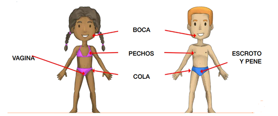

Sexualidad
La educación sexual ayuda a las personas a obtener la información, las herramientas y la motivación necesarias para tomar decisiones saludables sobre el sexo y la sexualidad. Planned Parenthood es el proveedor de educación sexual más grande del país, alcanzando a 1,2 millones de personas por año.
Prevención de enfermedades
Las infecciones de transmisión sexual (ETS) son infecciones que se contagian por contacto sexual y ocasionalmente también pueden ocasionar enfermedad inflamatoria pélvica en las mujeres (una infección del útero y las trompas de Falopio) y epididimitis en los hombres (inflamación del tubo en espiral detrás de los testículos). Las complicaciones de las ETS pueden ocasionar infertilidad o un embarazo ectópico (un óvulo fertilizado que crece fuera de la matriz). Si una mujer está embarazada un ETS puede infectar su bebé.
Los síntomas que podrían indicarnos que contrajimos una infección son:

- Llagas o protuberancias en los genitales o en la zona oral o rectal
- Dolor o ardor al orinar
- Secreción proveniente del pene
- Flujo vaginal inusual o con olor extraño
- Sangrado vaginal inusual
- Dolor durante las relaciones sexuales
- Dolor e inflamación de los ganglios linfáticos, particularmente en la ingle, aunque a veces más extendidos
- Dolor en la parte inferior del abdomen
- Fiebre
- Erupción en el tronco, las manos o los pies.
Aunque es muy coloquial debido a esto muchas veces es posible que no haya ningún síntoma, los signos y síntomas pueden aparecer unos días después de exposición o pueden pasar años antes de que tengas algún problema perceptible según cada organismo.
Acoso
El acoso sexual es cualquier comportamiento verbal, psicológico o físico NO deseado, dirigido contra una persona por razón de su sexo con el propósito de crear un ambiente intimidatorio, hostil, humillante, y de atentar contra su dignidad.

Los puntos rojos son PARTES ÍNTIMAS, que nadie y solo tú puede tocar, estas partes intimas son las que cubres con ropa interior y trajes de baño

Aunque la boca no la cubres con ropa NADIE puede poner su mano o cualquier otra cosa sobre ella para taparla.
Embarazo no decíados
Las causas de que se produzcan embarazos a estas edades no responden a un criterio común, sino que depende mucho de la cultura, la educación, el entorno o los avances médicos de cada país. En algunos territorios se permite y se fomenta el matrimonio en edades muy tempranas, casi siempre cuando la niña se encuentra en su etapa adolescente; además, en muchas culturas la fertilidad de las niñas es uno de los valores más importantes.
En los territorios donde no predominan o son ilegales los matrimonios con menores de edad, la principal causa de embarazo adolescente responde a que los jóvenes mantienen relaciones sexuales sin utilizar anticonceptivos, lo que en las sociedades occidentales se conoce como embarazos no deseados.